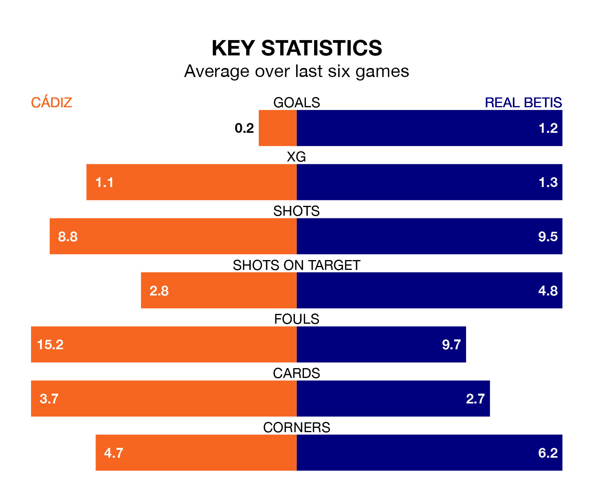

Cádiz face Real Betis at the Estadio Nuevo Mirandilla on late Friday looking to secure a first win in 20 La Liga games.
Cádiz have lost nine and drawn 10 matches since they last earned three points – against Villarreal on September 1.
They face a Betis side who have won six and drawn 10 over that time.
Cádiz are 18th in the table after 23 games, of which they have won two and drawn 11, earning 17 points.
Betis are 10 places ahead of the home side in eighth, with eight wins and 11 draws putting them on 35 points.
In the last 10 years, Cádiz and Betis have played each other on nine occasions. Cádiz won two of them, Betis four, and they drew three times.
On average, Cádiz scored 1.2 goals and Betis 1.2 in those matches.
Their last meeting was on September 24, when they played out a 1-1 draw.
With 15 goals in 23 games so far this season, Cádiz are the league's lowest scorers with 0.7 goals per game. And they are conceding at an average rate, letting in 31 goals at a rate of 1.3 per game.
The visitors are also below average scorers, with 1.1 goals per game, compared to a league average of 1.3. They have also conceded 1.1 goals per game.
Cádiz's last match was on Sunday, a 0-0 draw against Villarreal.
Betis drew 1-1 with Getafe CF last time out, also on Sunday, with Isco on the scoresheet.
Updated: 10:01 (UTC), 06/02/24